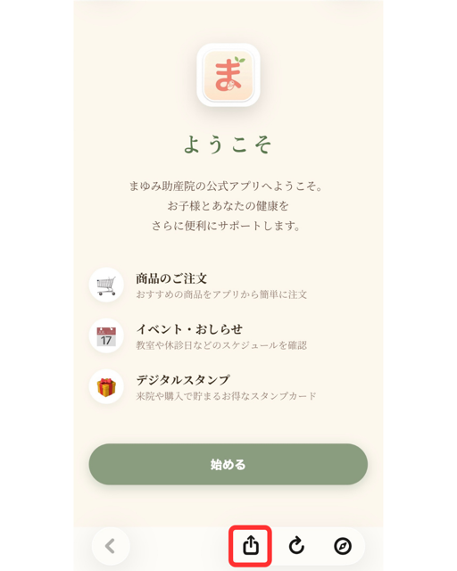
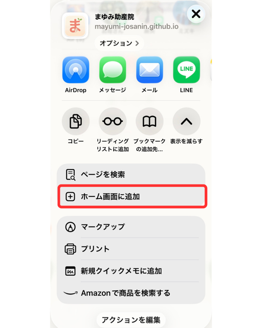

まゆみ助産院アプリ はじめ方
スマートフォンのホーム画面に追加して、アイコンからお使いいただけます。
まず、このQRコードを読み取ってください
カメラアプリを向けるだけで開きます。
お使いの機種に合わせた手順が、画面に出ます。
https://mayumi-josanin.github.io/mayumi-app/hajimekata/
iPhone をお使いの方
-
画面の下の「共有ボタン」を押す四角から矢印が出ている印（下の写真 ①）
-
「ホーム画面に追加」を選ぶ少し下にスクロールすると出ます（下の写真 ②）
-
アイコンが変わってから「追加」を押すはじめは緑の「ま」。少し待つと本来の絵に変わります


Android をお使いの方
-
画面の右上の「︙」を押す点が縦に3つ並んだ印
-
「ホーム画面に追加」を選ぶ「アプリをインストール」と出ることもあります。どちらでも構いません
-
「追加」または
「インストール」を押すホーム画面にアイコンができます
LINEから開いた方へ
LINEの中では追加できません。画面のすみの「…」から
「Safariで開く」「Chromeで開く」を選んでから、上の手順を行ってください。
いちばん大切なお願い
ホーム画面に追加してから、そのアイコンで開いてご登録ください。
追加する前に登録してしまうと、同じお名前で2つできてしまい、スタンプが分かれてしまいます。
すでに会員の方は、新しく登録し直さず、これまでと同じお名前とパスコードでお入りください。
うまくいかないときは、受付にお声がけください。
まゆみ助産院